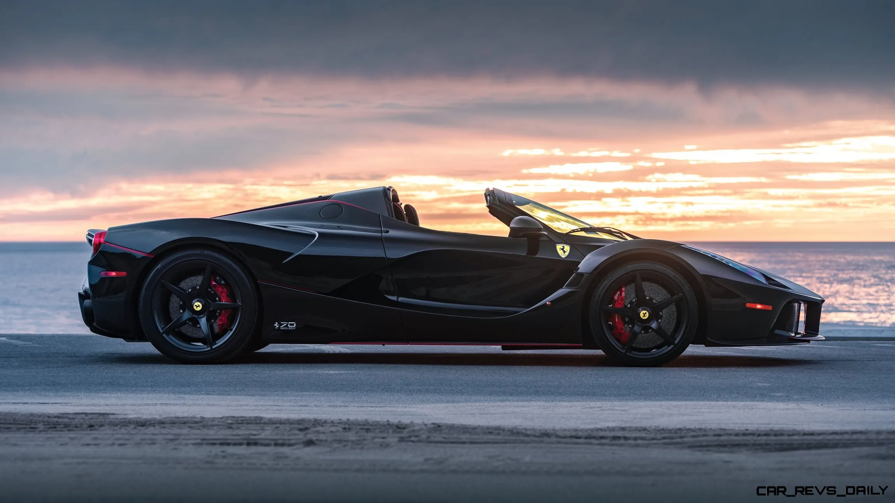
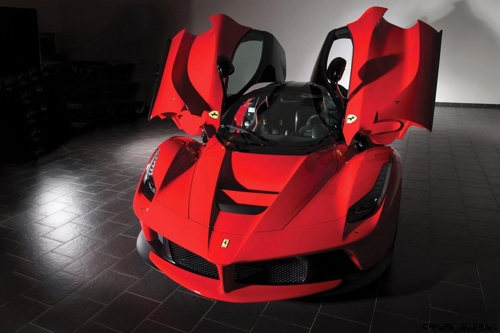

Here is

About content
Our theme
The theme of our blog is about cars, with a focus on hypercars. Not much is known about hypercars, perhaps because of their high prices. But there's more to hypercars than just their cool looks and high prices. Each hypercar has its own unique design, containing the ideas of the designer and its own brand culture. Special tailplane design, engine layout, engine performance, and aerodynamics are all worth discussing. We believe that hypercar is a combination of physics and design aesthetics, so we chose the top sports car as the topic of our blog
More AboutPassword policy
Our password policy consists of three main parts. The registration password must contain at least one uppercase letter, at least one number, and at least eight characters. The password must be the same as the confirmation password. To accomplish these goals, we first add the "li" tag to the HTML file, enter the required password policy into the registration box, and give it the same id. And inside it calls the "checkword" and "recheckword" methods with "onkeyup" and reads the data with "(this.value)". After that, we use regular expressions in the js file to determine whether the string has uppercase letters, whether it contains numbers, and whether it is more than eight digits. if so, add "valid" to the original" class ". Finally, set the text style of "valid" to be transparent in the css file so that the user knows that the password is valid. The password policy for confirming the password is determined by comparing the data read twice” (this.value)”. If the data read twice is the same, the Confirm password label will be hidden.
More About

Registration method
For new user registration, we decided to animate the login form into the registration form. In this way, users can feel the interactivity of the web page when using, and can choose freely in the registration and login, rather than the stiff jump to another separate interface. Immersive experiences are important to us. The dynamic changes can also make it more interesting.
More About